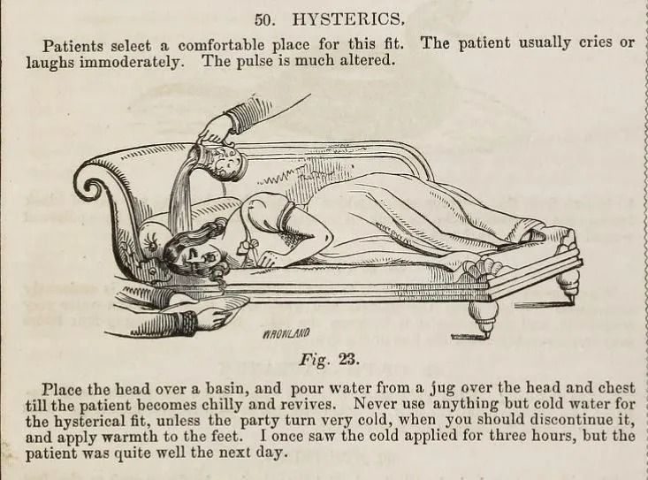
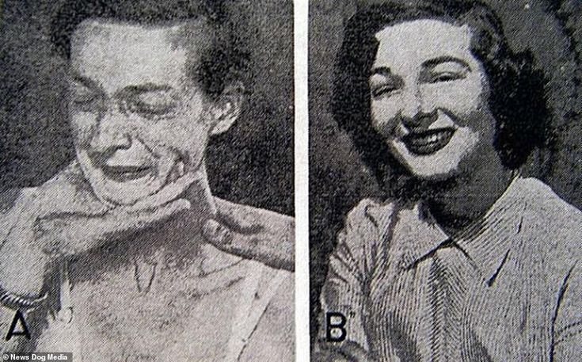

Has society truly made enough progress on the stigma of mental health, especially towards women?
Women have been historically oppressed for centuries. Combining that with historical views on mental health, along with the already weak agency women have in general society, the stigma surrounding mental health is detrimental to the female population. How, as a society, should we proceed from this historical oppression?
Mental disorders have always existed, but throughout western history, could be marked as demonic possession, a sign of witchhood, or dismissed all together as the markings of a hysterical woman. Four hundred, those who were not isolated from society, women could be tortured and inevitably killed, for having the markings of a witch.. even though these were likely just basic mental health disorders.
200 years later, mental health with men is taken a bit more seriously, but for women, it’s simply marked off as hysteria. Women are the charges of men, and have little to no agency in their own medical care or treatment. While men and women can still be considered insane, men would primarily get medical treatment in other facilities, making strides in healthcare. Women would have water forcibly poured on top of them, be locked away in their own homes, and still forced away from general society.
In the 1950s, lobotomization was typically the procedure of choice, if parents or husbands, wanted to quickly fix the women in their charge.
Women were likely to be the targets of lobotomization, as a quick fix to depression, anxiety, and any mental illness a man charged with her care deemed too faulty. By severing the connections in the prefrontal cortex, those that did not experience the extreme and deadly complications, would be subject to a life purposefully disabled, and hidden away from society.
Women are still disparaged in psychatric settings. We like to think as a public that we have evolved from the days of locking away women for the crime of being mentally anguished or isolating them from society at large. Not only this, but women are oftentimes left out of conversations involving mental health, on the pretense of it not affecting them as much, because they aren't dying from it.
Women make up 75% of all suicide attempts. Because men make up 80% of all suicide deaths, the mental health crisis has been shifted to focus on men, rather than the collective, sexless issue of suicide.
There is no quick fix for stigma. Groups, like women, who have been historically disparaged, cannot wave away centuries of oppression, even with legislation, or widespread communication. But, we can certainly try.